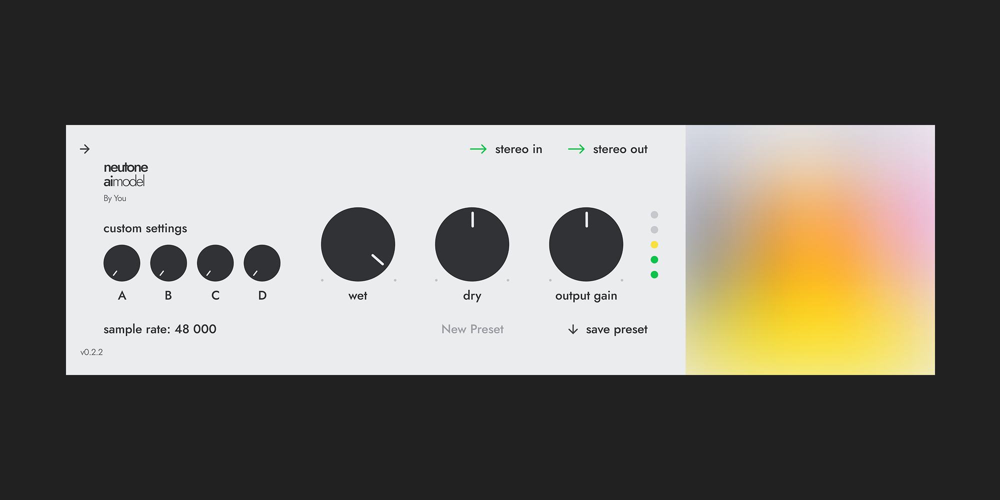
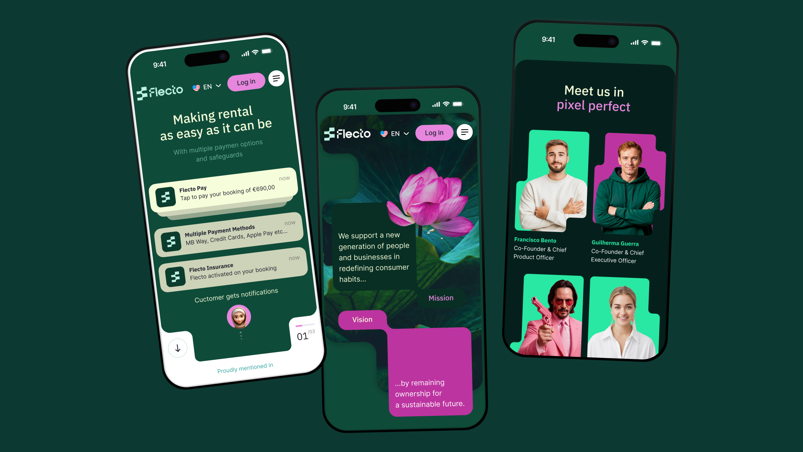
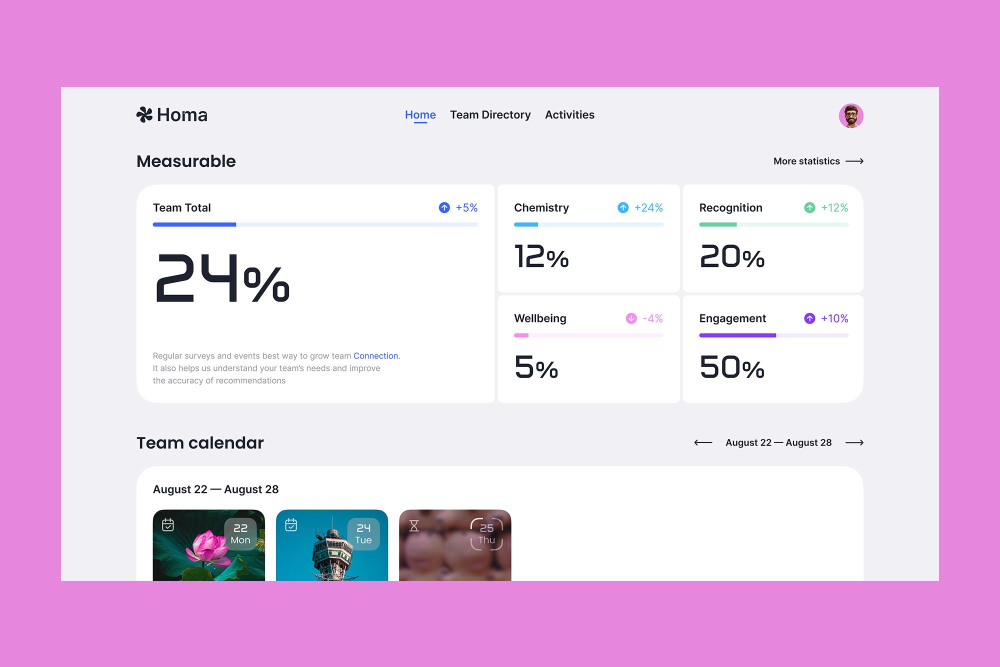

132/1
144/3

175/4
1816/9
192/1
204/3
211/1
223/2
235/4
2416/9
252/1
264/3
271/1
283/2
295/4
3016/9
312/1
324/3
331/1
343/2
355/4
3616/9
372/1
384/3
391/1
403/2
415/4
4216/9
432/1
444/3
451/1
463/2
475/4
4816/9
492/1
504/3